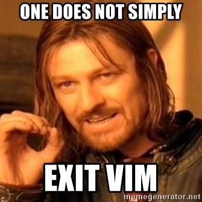
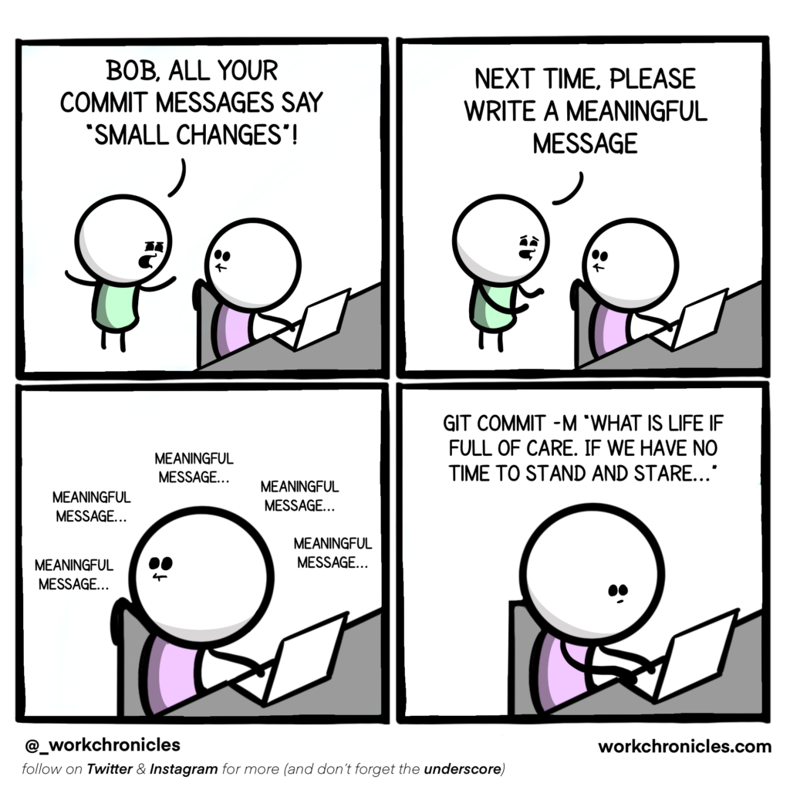

2. Revising the basics#
In this section, we will go over a few of the basic commands and make sure you are up to speed again with some of the more common tasks you might want to perform using git.
See also
If you need a refresher on git’s syntax at any point, you can refer to:
git - the simple guide (KISS),
the Pro Git Book (contains everything you will ever need),
Atlassian’s tutorials (somewhere in-between the complexity),
or my older presentation on git’s internals (self-promotion).
Warning
If you feel confident, you can skip this section at your own peril! A code block is available here to initialise a repository with all the required components for the following chapters.
The topics covered in this section are: add, commit, status and log.
2.1. Creating a new repository#
Let’s begin by creating a new git repository to play around with.
Instructions
Create a new directory on your machine named git-collab and initialise it as a new repository. Next, create a readme.md with some text, stage it and commit it with the message Initial commit.
cd ~
mkdir git-collab && cd git-collab
git init
echo "This is a readme." > readme.md
git add -A
git commit -m "Initial commit"
Warning
If git commit results in the following error message, you need to update your git config as instructed. More information on setting up git can be found in the Pro Git book.
Author identity unknown
*** Please tell me who you are.
Run
git config --global user.email "you@example.com"
git config --global user.name "Your name"
to set your account's default identity.
Omit --global to set the identity only in this repository.
2.2. Saving changes#
Now that we have created and initialized our git repository, we can perform some file creation/modification tasks and store them as new commits (snapshots) with some accompanying descriptions.
Instructions
Create a simple R script that defines a vector
xcontaining the numbers 1 through 10.Before staging and committing the file, ask git to show you what it knows about this new file.
Afterwards, stage just the R script. Then, ask git for info again.
Finally, commit the file and supply a nice commit message consisting of a title and a body.
echo "x <- 1:10" > vectors_ftw.R
git status can be used to show any new (untracked) or altered (modified) files in your working directory.
$ git status
On branch master
Untracked files:
(use "git add <file>..." to include in what will be committed)
vectors_ftw.R
nothing added to commit but untracked files present (use "git add" to track)
As is often the case, git already gave us a hint on what we might want to do next (add).
git add vectors_ftw.R
After staging files via git add, git status will list all changes that are ready to be committed.
$ git status
On branch master
Changes to be committed:
(use "git restore --staged <file>..." to unstage)
new file: vectors_ftw.R
To create a full commit message, use the commit command without the -m flag. This will open an editor where you can type a commit title, followed by a blank line, followed by a longer paragraph (can contain line breaks). Try to wrap the main text at 72 characters to keep things legible on the command line.
git commit
GNU nano 4.8 /home/pmoris/git-collab/.git/COMMIT_EDITMSG Modified
Create a vector
Adds an R script to create a nifty vector.
# Please enter the commit message for your changes. Lines starting
# with '#' will be ignored, and an empty message aborts the commit.
#
# On branch master
# Changes to be committed:
# new file: vectors_ftw.R
#
Danger
Beware the perilous depths of V I M.

If you did not configure your preferred git editor, chances are you ended up in vim when you tried to commit without using the -m flag (i.e. when trying to write a full message for your commit). To exit it, hit Esc, then type :q to quit (after writing your commit message of course).
To change your default git editor, use the following command git config --global core.editor <editor-name>. nano might be all you need, but you could even tell git to use something like VSCode ("code --wait").
See also
A few pointers for useful commit messages can be found here: https://cbea.ms/git-commit/. More strict conventions are also available (https://www.conventionalcommits.org/en/) and could be worth considering for larger collaborative projects.
